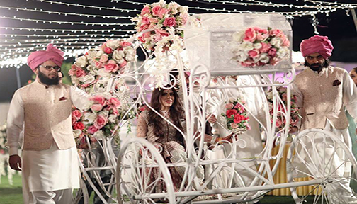

Joan Huq
Solaman
Pakistan Wedding Events
Solaman married a few years ago in Pakistan. The wedding consisted of two main events –the Nikkah and Walima combined with smaller traditions and occasions. To understand why all these events are so important, it is best to understand culturally, marriages are not only seen as a union between a husband and a wife, but also a union between their families. First, let me start with the list of events along with a definition.
Definitions
- Mehdi
- - The Mehndi ceremony is held the night before the wedding as a way of wishing the bride good health and success as she makes her journey on to the marriage.
- Baraat
- - Baraat is a celebratory wedding procession for the groom.
- Nikah
- - The Nikah is the formal marriage ceremony where a marriage contract is signed by both the bride and the groom in the presence of close family members. The Nikah is typically performed by a religious scholar at a mosque, who is licensed by the government to perform the ceremony.
- Walima
- - The Walima is the formal reception hosted by the husband and wife and officially makes the marriage public. It is typically a huge celebration with many relatives and guests of both families in attendance.
-
Mehdi
top The Mehdi event was for close family members and friends.
The Mehdi event was for close family members and friends.
During the Mehndi party, there was a henna artist who applied mehndi to our hands.
The night was filled with dancing, songs, and food. -
Baraat
top Here is the Baraat wedding procession where we arrived on a horse-drawn carriage.
Here is the Baraat wedding procession where we arrived on a horse-drawn carriage. -
Nikah
Solaman at Nikah
 Here are images of the Nikah where a marriage contract was signed. Solaman is sitting with his
Brother in Law.
Here are images of the Nikah where a marriage contract was signed. Solaman is sitting with his
Brother in Law.
Our Family at the Nikah
top Here is our family standing inside the Mosque after the Nikah.
Here is our family standing inside the Mosque after the Nikah. -
Nikah at Night
Nika Hall
 The evening of the Nikah the bridges family hosted a large party at a hall that included
dancing, songs, and food.
The evening of the Nikah the bridges family hosted a large party at a hall that included
dancing, songs, and food.
The night included professional musicians as well as performances by family and friends.
Here is our extended family photo taken in the Nika Hall.Bride Arrival
 Here is where the bride arrived in a carriage being led by her two brothers.
top -
Walima
top The Walima was held the next day hosted by the groom’s side.
The Walima was held the next day hosted by the groom’s side.
Our family greeted guests by throwing roses over their heads. Our family also present garland to the bride's Mother and Father which is worn around the neck.
When Solaman and Sasha arrived my Sidra my youngest daughter was given the basket of roses to throw at the bride and groom.
But rather than throwing over their head she took handfuls and threw right at her brother getting flower peddles in his hair.